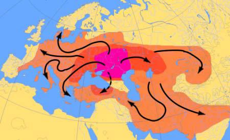

Dars-e 7 — Kārhā‐ye ruzmarre
Matn ♫ Kārhā‐ye ruzmarre
Sārā ruzhā‐ye šanbe tā cāhāršanbe be dānešgāh miravad. U sobhhā sāat‐e yek rob’ be haft az xāb bidār mišavad va nim sāat dar pārk midavad. Cand daqiqe ham narmeš mikonad. U sepas duš migirad, lebāshā‐yaš rā mipušad, sobhāne mixorad va sāat‐ e hašt be dānešgāh miravad. U ma’mulan tā sāat‐e cāhār‐e ba’dazzohr kelās dārad. Sārā zohrhā dar sālon‐e qazāxori‐ye dānešgāh qazā mixorad. Pas az bargašt be xāne kam‐i esterāhat mikonad va sepas darshā‐yaš rā morur mikonad. Hafte‐i yek bār ham be dust‐aš, Mehrān, riyāziyāt dars midehad. Sārā asrhā ma’mulan bā dustān‐aš tafrih mikonad. Ānhā gāh‐i be sinamā, teātr yā gardeš miravand. Ba’z‐i šabhā ham be konsert miravand. Sārā hic tafrih‐i rā bištar az raftan be konsert dust nadārad.
Dorost yā qalat?
1. Sārā az šanbe tā panjšanbe be dānešgāh miravad.
2. Sāat‐e hašt az xāb bidār mišavad.
3. Nāhār rā dar xāne nemixorad.
4. Dar hafte yek bār be Mehrān riyāziyāt dars midehad.
5. Sārā raftan be konsert rā az hame‐ye tafrihhā bištar dust dārad.
Sāxtār Kārhā‐ye ruzmarre
Irān‐o irāni Mardom‐e Irān
Goftogu Sāat cand‐e?
Sāxtār
Sefat‐e nāmošaxxas
| Piš az esm | Esm | Pas az esm |
| dānešjuyān‐e | bištar‐i | |
| dānešjuyān‐e | kamtar‐i | |
| cand | dānešju | |
| candin | dānešju | |
| bištar/aqlab‐e | dānešjuyān | |
| hame‐ye/tamām‐e | dānešjuyān | |
| ba’z‐i/barx‐i | dānešjuyān | |
| har | dānešju (‐yi) | |
| hic | dānešju‐yi |
Nokte
- Sefat‐e nāmošaxxas‐e šomāreši bā esm‐e mofrad miāyad: cand/candin ketāb. - Barx‐i az sefathā‐ye nāmošaxxas bā harf‐e ezāfe‐ye az ham miāyand: ba’z‐i mardom / ba’z‐i az mardom. - Hic *bā *esm‐e nāmošaxxas va fe’l‐e manfi miāyad: hic dānešju‐yi nayāmad.
Zamir‐e nāmošaxxas
| Harkas/**hamekas **miguyad. | **Hickodām **xub nist. |
| Harciz/harkodām/**hameciz **momken‐ast. | Besyār‐i midānand. |
| **Hickas **nayāmad. | Barx‐i/**ba’z‐i **midānand. |
Nokte
- Zamirhā‐ye nāmošaxxas bištar tarkibhā‐yi az vāžehā‐ye har, hic yā hame hastand: harjā, hicjā, hamejā.
Moqāyese: sefat‐o zamir‐e nāmošaxxas
| Sefat + esm | Zamir |
| hame‐ye jāhā | hamejā |
| har jā‐yi | harjā |
| hic kas‐i | hickas |
| har kas‐i | harkas |
| ba’z‐i mardom | ba’z‐i |
Bayān‐e zamān
| Soāl | Javāb | Sāat be raqam | Bāmdād/ba’dazzohr | ||||||
| Sāat cand‐ast? | (Sāat) haft‐ast. | 07:00 / 19:00 | 07:00 bd. / 07:00 bz. | ||||||
| (Sāat) nuzdah‐ast. | 19:00 | 07:00 bz. | |||||||
| (Sāat) haft‐o rob’‐ast. | 07:15 / 19:15 | 07:15 bd. / 07:15 bz. | |||||||
| (Sāat) haft‐o pānzdah daqiqe‐ast. | 07:15 / 19:15 | 07:15 bd. / 07:15 bz. | |||||||
| (Sāat) haft‐o nim‐ast. | 07:30 / 19:30 | 07:30 bd. / 07:30 bz. | |||||||
| (Sāat) haft‐o si daqiqe‐ast. | 07:30 / 19:30 | 07:30 bd. / 07:30 bz. | |||||||
| (Sāat) yek rob’ be hašt‐ast. | 07:45 / 19:45 | 07:45 bd. / 07:45 bz. | |||||||
| (Sāat) haft‐o cehel‐o panj daqiqe‐ast. 07:45 / 19:45 | 07:45 bd. / 07:45 bz. | ||||||||
| Sāat‐e cand / ce sāat‐i? | (Sāat‐e) haft. | 07:00 / 19:00 | 07:00 bd. / 07:00 bz. | ||||||
| har | hic | hame | barx‐i ba’z‐i hickodām | aqlab | hickas | hicjā | hamejā | harkas | harjā |
- Be __ kas‐i ke mixāhi, begu! 2. __ yek jur fekr mikonad. 3. __ hamin‐ast. 4. Az __‐ye kārmandān motešakker‐am. 5. Dar donyā __ jā‐ye behtar‐i peydā nemikoni. 6. __ ke miravam, u rā mibinam. 7. __ az mardom tanbal‐and. 8. Bā __ az ānhā āšnā hastam. 9. __‐e mardom kār kardan rā dust dārand. 10. __ rā dust nadāram. 11. Be __ e’temād nakon! 12. Bā to __ nemiāyam.
Sāat cand‐ast?
Be raqamBe horuf
09:00Sāat noh‐ast.
09:15
09:30
09:35
09:45
09:50
Barā‐ye harkodām az javābhā‐ye zir yek soāl benevis!
| Javāb | Soāl |
| Sāat haft‐o nim‐ast. | Sāat cand‐ast? |
| Mā sāat‐e panj bā ānhā qarār dārim. | |
| Film emšab sāat‐e hašt‐o rob’ šoru’ mišavad. | |
| Bist daqiqe be noh miāyand. | |
| Sāat cāhār‐o cehel‐o panj daqiqe‐ast. | |
| Mā se sāat vaqt dārim. |
Irān‐o irāni – Mardom‐e Irān
Irān be ma’ni‐ye Sarzamin‐e Āryāyiyān‐ast. Mardom‐e Irān az nežād‐e āryāyi hastand. Āryāyiyān tirehā‐ye moxtalef‐i dārand. Ma’ruftarin‐e ānhā Pārs‐ast. Bozorgtarin daste az mardom‐e Irān pārsi hastand. Az su‐ ye digar, az gozaštehā‐ye dur tā emruz dar Irān aqvām‐e gunāgun‐i zendegi mikonand. Emruze dar Irān aqvām‐e Pārs, Kord, Lor, Tork, Torkaman, Baluc, Arab, armani, gorji va āšuri dar kenār‐e yekdigar dar solh‐o ārāmeš zendegi mikonand. Aksariyat‐e mardom‐e Irān mosalmān‐and. Aqalliyathā‐ye mazhabi dar Irān aqlab zartošti, masihi va yahudi hastand. Haryek az aqvām‐e irāni zabān, farhang va ādāb‐o rosum‐e jāleb‐i dārad. Zabān‐e rasmi‐ye Irān fārsi‐st. Fārsi hamān pārsi‐st.
Dorost yā qalat?
- Irān ya’ni Sarzamin‐e Āryāyiyān. 2. Irān cand zabān‐e rasmi dārad. 3. Dar Irān aqvām‐e moxtalef‐i zendegi nemikonand. 4. Bozorgtarin aqalliyathā‐ye mazhabi dar Irān masihiyān, zartoštiyān va yahudiyān hastand. 5. Aqvām‐e irāni bā yekdigar dar āšti‐o ārāmeš zendegi mikonand.
Goftogu – Sāat cand‐e?
Farah:Farhād, emruz candšanba‐st?
Farhād:Sešanbe. Cetowr mage?
Farah:Bāzi‐ye Irān‐o Kore emruz‐e?
Farhād:Āre. Ce bāzi‐ye mohemm‐i!
Farah:Sāat‐e cand?
Farhād:Sāat‐e hašt‐o nim.
Farah:Ozr mixām, ce sāat‐i?
Farhād:Hašt‐o nim.
Farah:Al’ān sāat cand‐e?
Farhād:Sāat panj‐e. Se sāat‐o nim‐e dige vaxt dārim.
Nokte
| Goftāri | Neveštāri |
| candšanba‐st | candšanbe‐ast |
| mage | magar |
| emruz‐e | emruz‐ast |
| āre | āri/bale |
| ozr mixām | ozr mixāham |
| cand‐e | cand‐ast |
| panj‐e | panj‐ast |
| dige | digar |
| vaxt | vaqt |
Ebārathā/vāžehā
Šanbe – yešanbe (yekšanbe) – došanbe – sešanbe – cāršanbe (cāhāršanbe) – panšanbe (panjšanbe) – jom’e
Konsert‐e Ebi – film‐e sinamāyi – mosābeqe‐ye tenis – paxš‐e mostaqim‐e futbāl – arusi‐ye Minā – jašn‐e tavallod‐e Bābak
Bā estefāde az ebārathā/vāžehā goftogu‐ye bālā rā bā hamkelāsi‐yat tamrin kon! Jāhā‐ye xāli rā por kon!
Nāzi:Farhād, fardā __‐st?
Farhād:Panšanbe. __ __?
Nāzi:Televiziyon ye __‐e xub nešun mide.
Farhād:Ce __‐i?
Nāzi:__‐e __.
Farhād:Pas biyā xune‐ye mā. Mā ye __‐e bozorg dārim.
Az goftāri be neveštāri tabdil kon!
GoftāriNeveštāri
Ozr mixām, fardā candšanba‐st?
Āre, sāat haft‐e.
Al’ān sāat cand‐e?
Ye sāat‐o nim‐e dige vaqt dārin.
Aqrabe‐ye sāniyešomār derāztar az aqrabe‐ye daiqešomār‐e.
Har daiqe šast sāniye dāre.
Vāžehā-ye dars-e
Pasoxhā-ye dars-e
Dorost yā qalat?
1. qalat – 2. qalat – 3. dorost – 4. dorost – 5. dorost
Jāhā‐ye xāli rā bā vāžehā‐ye zir por kon!
1. har – 2. harkas – 3. hamejā – 4. hame – 5. hic – 6. harjā – 7. ba’z‐i – 8. barx‐i – 9. aqlab – 10. hickodām – 11. hickas – 12. hicjā
Sāat cand‐ast?
Sāat noh‐o rob’‐ast. – Sāat noh‐o nim‐ast. – Sāat noh‐o si‐yo panj daqiqe‐ast. – Sāat noh‐o cehel‐o panj daqiqe‐ast. – Sāat dah daqiqe be dah‐ast.
Barā‐ye harkodām az javābhā‐ye zir yek soāl benevis!
Sāat‐e cand bā ānhā qarār dārid? – Film‐e emšab ce sāat‐i šoru’ mišavad? – Sāat‐e cand miāyand? – Sāat cand‐ast? – Mā cand sāat vaqt dārim?
Dorost yā qalat?
1. dorost – 2. qalat – 3. qalat – 4. dorost – 5. dorost
Jāhā‐ye xāli rā por kon!
candšanba – Cetowr – mage – film – sāat – sāat – hašt‐o rob’ – televiziyon
Az goftāri be neveštāri tabdil kon!
Ozr mixāham, fardā candšanbe‐ast? – Bale, sāat haft‐ast. – Al’ān sāat cand‐ast? – Yek sāat‐o nim‐e digar vaqt dārid. – Aqrabe‐ ye sāniyešomār derāztar az aqrabe‐ye daqiqešomār‐ast. – Har daqiqe šast sāniye dārad.
ādāb этикет aksariyat большинство al’ān теперь; в настоящее время aqalliyat меньшинство aqlab часто aqlab-e больше всего; большая часть aqrabe указатель aqvām родственники Arab араб, арабский ārāmeš покой, спокойствие āri да (آ___) armani армянин arusi свадьба āryāyi ариец, арийский āšnā знакомый asr эпоха, век āšti примирения; мир āšuri ассириец, ассирийский ba’dazzohr после полудня ba’z-i некоторые bār 1) раз 2) багаж bargašt возвращение barx-i az некоторые barx-i некоторые behtar лучше besyār-i многие bidār šodan (šav, šow) просыпаться bištar-e больше всего; большая часть candin много candšanbe какой день недели? cetowr magar почему dānestan (dān) знать daqiqešomār минутная стрелка dars урок dars dādan (deh) научить daste группа, множество, пучок davidan (dav, dow) бежать donyā мир, вселенная dur далекий, далеко duš 1) душ 2) плечо e’temād kardan (kon) доверять, полагаться emruze в наше время esterāhat kardan (kon) отдых farhang культура, словарь fekr kardan (kon) думать film-e sinamāyi художественный фильм gorji грузин, грузинский gozašte последний, прошедший, предыдущий gunāgun разнообразный hamān тот самый hamekas каждый; все hamin этот самый har каждый harciz всё, что-нибудь harjā везде, где-нибудь harkas все, кто-нибудь harkodām каждый, любой haryek каждый hic ничего, ни один hicjā нигде hickas никто hickodām никакой jā место jašn-e tavallod день рождения jur 1) вид, тип 2) подходящий kas человек konsert концерт ma’mulan обычно ma’ni значение, смысл masihi христианин, христианский mazhabi религиозная momken возможный morur повторение, пересмотр mosalmān мусульманин, мусульманский moxtalef разный, различный nāhār обед narmeš гимнастика nešān dādan (deh) шоу nežād порода, происхождение nim половина (-م) Pārs Персия pārsi перс, персидский paxš-e mostaqim прямая трансляция peydā kardan (kon) найти rasmi официальный riyāziyāt математика rob’ четверть rosum обычаи; нравы ruzmarre ежедневный sāat час, часы sālon-e qazāxori-ye dānešgāh столовая в университете sāniye второй sāniyešomār подержанный sarzamin страна; территория sepas тогда; впоследствии sinamā кинотеатр sobhāne завтрак solh мир (не война) šoru’ šodan (šav, šow) начать su сторона, направление tafrih kardan (kon) развлекать tanbal ленивый teātr театр tenis теннис tire 1) племя 2) тёмный Torkaman туркмен, туркменский xāb сон yahudi еврей, еврейский zartošti зороастриец, зороастрийский zohr полдень